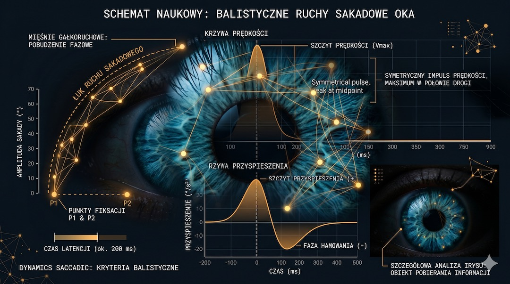
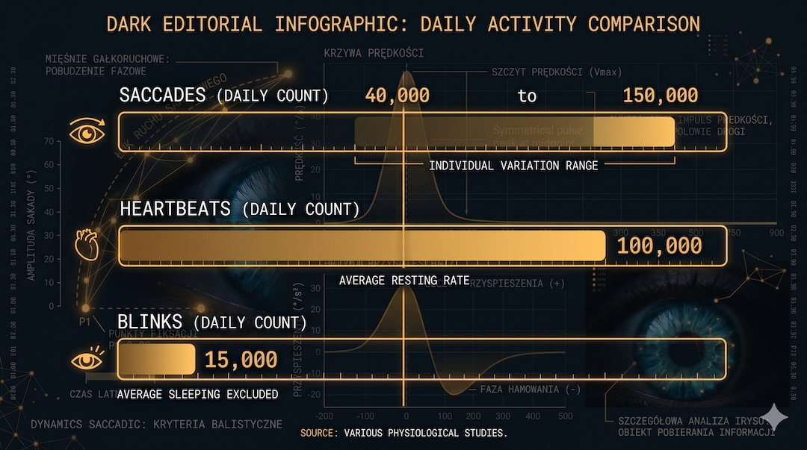
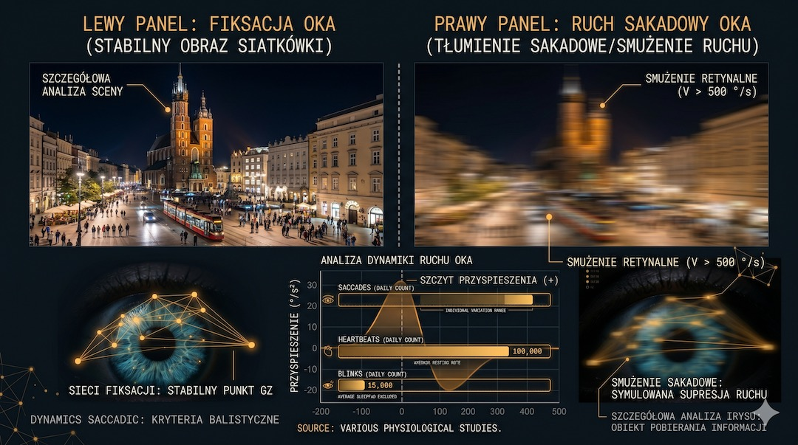
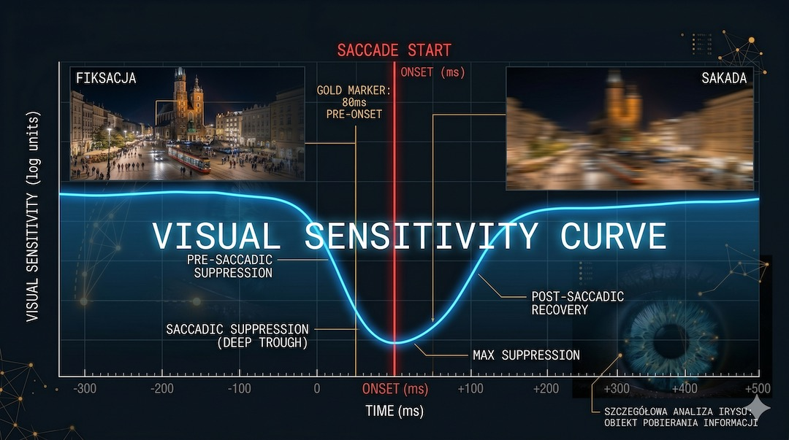
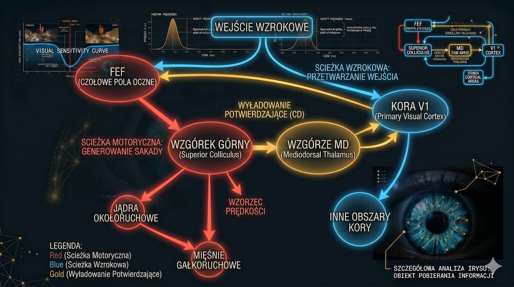
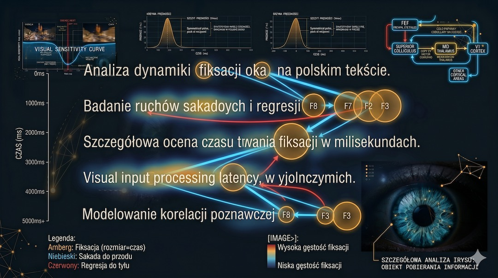
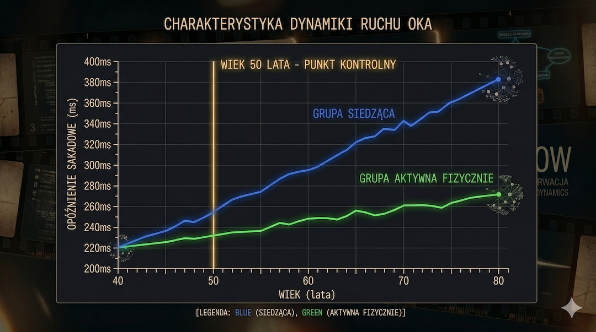

Twoje oczy wykonują od 40 000 do 150 000 sakad dziennie — błyskawicznych skoków szybszych niż mrugięcie, których nigdy nie widzisz. Mózg celowo je ukrywa, wyłączając obraz jeszcze zanim oko fizycznie ruszy. To zjawisko nazywa się supresją sakadyczną i jest jednym z najbardziej niedocenianych cudów neurobiologii. Po pięćdziesiątce ten mechanizm zaczyna działać nieco inaczej — i warto wiedzieć dlaczego.
Szybka odpowiedź
Sakady to bardzo szybkie ruchy oczu, dzięki którym przenosisz wzrok między punktami. Supresja sakadyczna to mechanizm mózgu, który na ułamek sekundy ogranicza odbiór obrazu podczas tego ruchu. Dlatego świat nie wydaje się rozmazany ani skaczący, mimo że oczy wykonują tysiące takich ruchów każdego dnia. Po 50-tce warto ocenić wzrok, jeśli pojawiają się nowe zaburzenia widzenia.
Kluczowe wnioski
Kluczowe wnioski
- Wykonujesz od 40 000 do 150 000 sakad dziennie — to więcej niż uderzeń twojego serca w ciągu doby.
- Supresja sakadyczna zaczyna się 50–100 ms przed ruchem oka — mózg wyłącza obraz zanim oko jeszcze ruszyło.
- Podczas czytania twoje oczy cofają się do tyłu w ok. 10–15% ruchów — i nic z tego nie zauważasz.
- Po 50. roku życia latencja sakad wydłuża się o 20–30 ms, ale regularna aktywność fizyczna spowalnia ten proces.
Czym są sakady i dlaczego nigdy ich nie widzisz?
Sakada to bardzo szybki, balistyczny ruch gałki ocznej, który przenosi punkt fiksacji wzroku z jednego miejsca na drugie. Nazwa pochodzi od starofrancuskiego słowa saccade oznaczającego gwałtowne szarpnięcie. Pojedyncza sakada trwa od 20 do 200 milisekund, a gałka oczna osiąga podczas niej prędkość kątową nawet 700 stopni na sekundę.
Kluczowe słowo to balistyczny. Gdy mózg raz zaprogramuje sakadę i ją wystrzeli, nie możesz jej już zmienić ani zatrzymać — jak strzała po wypuszczeniu z łuku. To odróżnia sakadę od płynnych ruchów śledzenia (ang. smooth pursuit), którymi podążasz wzrokiem za poruszającym się obiektem. Sakady robisz cały czas: czytając tekst, rozglądając się po pokoju, oglądając mecz czy prowadząc samochód. Zobacz też markery krwi i zdrowie mózgu.
Nie widzisz sakad z prostego powodu: mózg je przed tobą ukrywa. W czasie każdego skoku obraz na siatkówce jest silnie rozmazany. Gdybyś to widział, świat wyglądałby jak film kręcony przez kogoś, kto nigdy nie słyszał o statywie. Ewolucja znalazła na to eleganckie rozwiązanie: aktywne wygaszenie wrażliwości wzrokowej w czasie ruchu, znane jako supresja sakadyczna.
- Czas trwania sakady: 20–200 ms w zależności od kąta obrotu
- Prędkość szczytowa: do 700 stopni kątowych na sekundę
- Charakter ruchu: balistyczny — nie do zatrzymania po wystrzeleniu
- Częstość: 3–5 sakad na sekundę podczas aktywnego patrzenia

Ile sakad wykonujesz dziennie? Liczby, które zaskoczą?
Wykonujesz od 40 000 do 150 000 sakad dziennie — a niektóre szacunki uwzględniające mikrosakkady mówią nawet o 250 000. Dla porównania: twoje serce bije ok. 100 000 razy na dobę. Sakady są jednym z najczęściej wykonywanych ruchów w twoim ciele — i niemal nigdy się o nich nie mówi.
Skąd tak duże rozbieżności w szacunkach? Zależy od metodologii i tego, co liczymy. Przy aktywnym czytaniu wykonujesz 4–5 sakad na sekundę. Przy swobodnym rozglądaniu się po pokoju — ok. 3. Podczas snu w fazie REM gałki oczne wykonują intensywne sakadopodobne ruchy. Jeśli przyjmiesz 16 godzin aktywności wzrokowej dziennie przy średnio 3 sakadach na sekundę, wychodzi ok. 172 000 sakad — nie licząc mikrosakkad. Zobacz też trening 3x30 po 50.
Mikrosakkady to osobna kategoria: miniaturowe, mimowolne skoki o kącie poniżej 1 stopnia, które oko wykonuje nawet podczas pozornie nieruchomej fiksacji. Badania Rolfsa opublikowane w 2009 roku w Vision Research wykazały, że mikrosakkady pojawiają się 1–2 razy na sekundę podczas każdej fiksacji i pełnią istotną funkcję: przeciwdziałają adaptacji siatkówki, która zachodziłaby przy absolutnie nieruchomym obrazie.
- Sakady standardowe: 40 000–150 000 dziennie przy 16 h aktywności
- Mikrosakkady: 1–2 na sekundę podczas każdej fiksacji
- Sakady w fazie REM: intensywne serie przez całą noc
- Sakady korekcyjne: dodatkowe drobne korekty po niedokładnym pierwszym skoku

Co widzi twoja siatkówka podczas sakady? Rozmazany film?
Siatkówka jest uczciwa — rejestruje wszystko, co pada na nią w czasie ekspozycji. Podczas sakady oko porusza się błyskawicznie, więc obraz na siatkówce rozmywa się dokładnie tak samo jak przy długim czasie naświetlania w fotografii. Każdy fotoreceptor w centralnej plamce żółtej, która ma rozdzielczość rzędu 1 minuty kątowej, zamiast punktu rejestruje ciągłą smugę rozciągniętą wzdłuż toru ruchu oka.
Gdyby mózg wiernie odtwarzał ten sygnał siatkówkowy, każda sakada wyglądałaby jak gwałtowne szarpnięcie kadru w telewizorze. Przy 3–5 sakadach na sekundę cały dzień byłby jednym wielkim migotaniem. Ewolucja uznała to za kompletnie nieakceptowalne i znalazła eleganckie rozwiązanie. Zobacz też sen po 50 i regeneracja układu nerwowego.
Supresja sakadyczna, opisana po raz pierwszy przez Whatmore i Kohutsa w 1961 roku i szczegółowo zbadana przez Martina Matina w klasycznym przeglądzie z 1974 roku w Psychological Bulletin, to aktywny mechanizm tłumienia sygnału wzrokowego w czasie okna sakadycznego. Supresja nie jest równomierna: tłumiony jest głównie kontrast i ruch, a kolor znacznie słabiej — mózg precyzyjnie kasuje dane mylące, zachowując użyteczne.
- Rozdzielczość plamki żółtej: 1 minuta kątowa — bezskuteczna podczas ruchu
- Efekt na siatkówce: ciągła smuga zamiast ostrych punktów
- Reakcja mózgu: aktywne wygaszenie sygnału, nie pasywna ślepota
- Selektywność: tłumiony jest głównie kontrast i ruch, kolor słabiej

Co to jest supresja sakadyczna i dlaczego jej nie zauważasz?
Supresja sakadyczna (ang. saccadic suppression ) to aktywne obniżenie czułości wzrokowej przez mózg w oknie czasowym tuż przed, w trakcie i krótko po sakadzie. Neurony w obszarach wzrokowych kory mózgu — szczególnie w pierwszorzędowej korze wzrokowej V1, obszarze V2 oraz obszarze MT odpowiedzialnym za percepcję ruchu — wykazują wyraźnie obniżoną odpowiedź na bodźce pojawiające się w tym oknie.
Supresja nie jest równomierna. Badania Burra, Morrone i Rossa opublikowane w 1994 roku w Nature wykazały, że tłumiona jest przede wszystkim droga wielkokomorową (ang. magnocellular pathway), odpowiedzialna za percepcję kontrastu i ruchu. Droga drobnokomórkowa (ang. parvocellular pathway), obsługująca kolory i drobne szczegóły, jest tłumiona znacznie słabiej. To ewolucyjna precyzja: kasowane są dane mylące, zachowywane użyteczne. Zobacz też mobilność i sprawność po 50.
Mierzalnym dowodem supresji jest efekt saccadic omission: jeśli podczas sakady przez 10 milisekund zmienisz pozycję wyświetlanego obrazu, badany nie zauważy tej zmiany. Ten eksperyment, powtarzany w dziesiątkach laboratoriów od lat 70., daje wyniki konsekwentne: bodźiec prezentowany w czasie sakady jest wykrywany 3–5 razy rzadziej niż ten sam bodźiec przy nieruchomym oku.
- Obszary mózgu objęte supresją: V1, V2, MT (obszar ruchu)
- Co jest tłumione: kontrast, ruch — droga wielkokomórkowa
- Co jest mniej tłumione: kolor, szczegóły — droga drobnokomórkowa
- Mierzalny efekt: bodźiec 3–5x rzadziej wykrywany podczas sakady

Skąd mózg wie, że za chwilę ruszy oko? Efferencja kopii?
Supresja sakadyczna zaczyna się 50–100 milisekund przed fizycznym ruchem gałki ocznej. Oko jeszcze stoi w miejscu, a mózg już wygasza wrażliwość wzrokową. Oznacza to, że supresja nie może być pasywną odpowiedzią na rozmazanie siatkówkowe — musi być sterowana z góry, z wyprzedzeniem. Mechanizm, który to umożliwia, nazywa się efferencją kopii (ang. corollary discharge ).
Efferencja kopii działa następująco: gdy obszary ruchowe mózgu — ciało czworaczego górnego (ang. superior colliculus) i pola czołowe wzroku (ang. frontal eye fields) — planują sakadę, jednocześnie wysyłają kopię tego rozkazu do wzgórza (ang. mediodorsal thalamus). Wzgórze pełni rolę przekaźnika i informuje korę wzrokową: za chwilę ruszamy — wygasimy czułość. Ten mechanizm szczegółowo opisał Roy Wurtz w przeglądzie opublikowanym w Vision Research w 2008 roku.
Co jeszcze bardziej fascynujące: mózg nie tylko wygasza obraz, ale aktywnie wypełnia lukę. Tuż przed sakadą zapamiętuje ostatni wyraźny obraz i podtrzymuje go w pamięci krótkotrwałej przez cały czas ruchu. Efektem jest subiektywne poczucie ciągłości i stabilności świata — mimo że co sekundę kilka razy dosłownie nic nie widzisz. To nie błąd systemu — to jego najważniejsza funkcja.
- Kiedy zaczyna się supresja: 50–100 ms przed fizycznym ruchem oka
- Kluczowe struktury: superior colliculus, FEF, mediodorsal thalamus, V1
- Mechanizm: kopia rozkazu ruchowego trafia do kory wzrokowej z wyprzedzeniem
- Efekt dodatkowy: mózg podtrzymuje ostatni wyraźny obraz przez czas sakady

Jak wyglądają sakady podczas czytania? Eye tracking oodsłania chaos?
Podczas czytania oczy nie przesuwają się płynnie wzdłuż linii tekstu. Wykonują serię skoków do przodu (sakady progresywne, obejmujące zwykle 6–9 znaków) i zatrzymań (fiksacje trwające ok. 200–250 ms). Ale prawdziwą niespodziankal są regresje: w ok. 10–15% wszystkich ruchów oko cofa się do już przeczytanego fragmentu. Czytasz ten artykuł i twoje oczy kilkukrotnie wróciły do wcześniejszych zdań — bez twojej wiedzy i woli.
Badania eye-trackingowe, których przegląd opublikował Keith Rayner w Psychological Bulletin w 1998 roku po 20 latach badań, ujawniły kolejny zaskakujący fakt: przestrzeń obejrzana w jednej fiksacji (ang. perceptual span) jest asymetryczna. U czytelników od lewej do prawej rozciąga się ona ok. 3–4 znaki w lewo od punktu fiksacji i aż 14–15 znaków w prawo. Mózg zbiera informacje z tekstu, który jeszcze nie był czytany, żeby zaplanować kolejną sakadę.
U osób z dysleksją odsetek regresji wzrasta do 20–30%, a fiksacje są dłuższe i mniej przewidywalne. Eye-tracking stał się dziś narzędziem diagnostycznym: neurolodzy używają wzorca sakad do wczesnego wykrywania choroby Alzheimera i Parkinsona — zmiany pojawiają się na lata przed klinicznymi objawami tych chorób.
- Sakady progresywne: 6–9 znaków do przodu — standard przy czytaniu
- Fiksacje: ok. 200–250 ms — tu odbywa się właściwe czytanie
- Regresje: 10–15% ruchów u zdrowych, do 30% przy dysleksji
- Zastosowanie kliniczne: diagnostyka dysleksji, Alzheimera, Parkinsona

Sakady a kino: dlaczego twój mózg działa jak projektor filmowy?
Kino działa na zasadzie iluzji: projektor wyświetla 24 nieruchome klatki na sekundę, między każdą klatką pojawia się ułamek sekundy ciemności — a mimo to widzisz płynny ruch. Mózg interpoluje ciągłość tam, gdzie jej fizycznie nie ma. To zjawisko opisał już w 1912 roku Max Wertheimer jako phi phenomenon — percepcję pozornego ruchu.
Supresja sakadyczna działa identycznie, tyle że odwrotnie. Kino ukrywa przerwy między klatkami — twój mózg ukrywa przerwy między fiksacjami. W obu przypadkach efektem jest poczucie ciągłości i płynności, której fizycznie nie ma w sygnale wejściowym. Twój wzrok przetwarza 3–5 wyraźnych fiksacji na sekundę; kino gęściej — 24 klatki. Ale mechanizm psychologiczny jest identyczny: wypełnianie luk na żyčenie odbiorcy.
Jest jednak istotna różnica. W kinie ciemne przerwy między klatkami naprawdę istnieją. W przypadku sakad mózg sam produkuje iluzję ciągłości, aktywnie podtrzymując ostatni obraz i bezszwowo łącząc go z następnym. Każdy twój widók świata jest w pewnym sensie filmem zmontowanym przez mózg w czasie rzeczywistym, ze starannie ukrytymi cięciami.
- Kino: 24 klatki/s + ciemność między nimi = wrażenie ruchu
- Wzrok: 3–5 fiksacji/s + supresja między nimi = wrażenie stabilności
- Wspólna zasada: mózg wypełnia luki lepiej niż myślisz
- Kluczowa różnica: w sakadach mózg sam konstruuje ciągłość — to aktywny proces
Cztery mity o sakadach, które właśnie obalamy?
Wokół sakad i supresji sakadycznej narosta kilka popularnych nieporozumień — powtarzanych nawet w artykułach popularnonaukowych. Czas je rozliczyć z danymi w ręku. roku życia. Ta sekcja porządkuje temat "Cztery mity o sakadach, które właśnie obalamy?" w prosty sposób: najpierw najważniejsze zasady, potem bezpieczne wdrożenie i na końcu sygnały, które warto monitorować. Taki układ pomaga działać spokojnie, utrzymać regularność i szybciej odróżnić dobre wskazówki od przypadkowych porad z internetu.
MIT 1: Podczas sakady widzisz czarny ekran. Nieprawda. Mózg wygasza sygnał wzrokowy, ale nie zastępuje go czernią — zamiast tego podtrzymuje ostatni wyraźny obraz i bezszwowo łączy go z następnym. Nie doświadczasz żadnej subiektywnej przerwy.
MIT 2: Supresja to bierny efekt rozmazania siatkówkowego. Fałsz. Supresja zaczyna się 50–100 ms przed ruchem oka — na długo przed jakimkolwiek rozmazaniem. To aktywny, zaplanowany proces neurologiczny sterowany z wyższych pięter mózgu przez mechanizm efferencji kopii.
MIT 3: Widzisz świat bez przerw, non-stop. Technicznie nieprawda. Masz dziesiątki tysięcy mikrosklepot dziennie. Mózg zakrywa je wszystkie tak sprawnie, że nie masz o nich pojęcia — ale są mierzalne. Bodźiec podczas sakady jest wykrywany 3–5 razy rzadziej niż przy nieruchomym oku.
MIT 4: Nie możesz zobaczyć własnych oczu w ruchu w lustrze. To akurat prawda — ale warto wiedzieć dlaczego. Supresja kasuje moment ruchu tylko dla ciebie. Inna osoba patrząca na ciebie z zewnątrz widzi ruch bez problemu.
- Supresja nie oznacza czarnego ekranu: mózg podtrzymuje ostatni obraz
- Supresja zaczyna się przed ruchem: to aktywny, zaplanowany mechanizm
- Ciągłość wzrokowa jest aktywnie konstruowana przez mózg
- Własne oczy w lustrze w ruchu — niewidoczne tylko dla ciebie
Co zmienia się w sakadach po 50. roku życia?
Układ sakadyczny zmienia się wraz z wiekiem w sposób mierzalny i mający realne konsekwencje. Badanie Abela, Troosta i Dell'Osso opublikowane w Electroencephalography and Clinical Neurophysiology w 1983 roku pokazało konsekwentny wzorzec: po 50. roku życia latencja sakad wydłuża się o ok. 20–30 ms. Prędkość szczytowa spada nieco. Wzrasta odsetek hipometrycznych sakad korekcyjnych — oko nie trafia w cel za pierwszym razem i musi wykonać dodatkowy drobny skok.
Te zmiany mają praktyczne konsekwencje: czytanie staje się nieco wolniejsze, reakcja na ruch w polu widzenia opóźniona, a jazda samochodem przy złej widoczności wymaga większego skupienia. To normalna, fizjologiczna zmiana — nie choroba. Warto ją jednak znać, bo pozwala świadomie kompensować: więcej czasu na czytanie ważnych dokumentów, większa ostrożność za kierownicą po zmroku.
Mechanizm supresji sakadycznej pozostaje sprawny przez całe życie. Co ważniejsze — regularna aktywność fizyczna działa neuroprotekcyjnie na układ sakadyczny. Aktywni fizycznie 60-latkowie mają parametry sakad porównywalne z siedzącymi 45-latkami. To bardzo konkretny powód, żeby się ruszać.
- Latencja sakad po 50.: wydłuża się o 20–30 ms — mierzalnie, ale kompensacyjnie
- Sakady korekcyjne: częstsze — oko rzadziej trafia za pierwszym razem
- Supresja sakadyczna: pozostaje sprawna przez całe życie
- Aktywność fizyczna: spowalnia zmiany — aktywni 60-latkowie jak siedzący 45-latkowie

Jak dbać o układ sakadyczny po pięćdziesiątce?
Układ sakadyczny można trenować — w pewnym zakresie. Sport, szczególnie gry zespołowe (tenis, siątkówka, koszykuówka) i sporty walki, trenuje szybkość i precyzję sakad przez intensywne śledzenie szybko poruszających się obiektów. Badania opublikowane w Journal of Sport and Exercise Psychology pokazały, że zawodowi gracze w tenisa mają latencję sakad o ok. 15–20 ms krótszą niż osoby nieuprawiające sportu w tym samym wieku.
Istnieją również specjalistyczne ćwiczenia okulomotoryczne stosowane w terapii dysleksji i rehabilitacji neurologicznej po udarze. Obejmują m. in. ćwiczenia antysakkadyczne (spojrzenie w kierunku przeciwnym do bodźca), seryjne skoki między punktami fiksacji i ćwiczenia płynnego śledzenia. Ich efekty są mierzalne u osób z deficytami — u zdrowych dorosłych skromniejsze, ale obecne.
Sygnały alarmowe wymagające konsultacji okulistycznej lub neurologicznej: nagłe pogorszenie precyzji ruchów oczu, podwójne widzenie przy sakadach, niemożność utrzymania fiksacji, drżenie gałek ocznych (oczoplas). Zmiany wzorca sakad mogą być wczesnym objawem chorób neurodegeneracyjnych — dlatego regularne badania okulistyczne po 50. powinny obejmować ocenę ruchomości gałek ocznych.
- Najlepszy trening: sport z szybkimi obiektami — tenis, squash, gry zespołowe
- Ćwiczenia okulomotoryczne: skuteczne przy deficytach, dostępne w terapii dysleksji
- Badania kontrolne: po 50. co roku — ocena ruchomości gałek ocznych
- Sygnały alarmowe: nagłe pogorszenie, podwójne widzenie, oczoplas — natychmiast do lekarza
Najczęściej zadawane pytania
Najczęściej zadawane pytania
Co to są sakady i supresja sakadyczna?
Sakady to szybkie skoki gałek ocznych między punktami fiksacji; trwają 20-200 ms i mogą osiągać do 700 stopni na sekundę. Supresja sakadyczna to chwilowe wyciszenie sygnału wzrokowego przez mózg, dzięki któremu nie widzisz rozmazania ani ruchu własnych oczu podczas tych skoków.
Warto przeczytać też: trening siłowy, dieta po 50-tce, sen i regeneracja, badania krwi.
Powiązane tematy: trening siłowy, dieta po 50-tce, sen i regeneracja, suplementacja.
Powiązane tematy: trening siłowy, dieta po 50-tce, sen i regeneracja, suplementacja.
Co to jest supresja sakadyczna?
Supresja sakadyczna to aktywne obniżenie czułości wzrokowej przez mózg tuż przed i podczas każdej sakady. Neurony w korze wzrokowej V1 i obszarze MT mają słabszą odpowiedź na bodźce w tym oknie. Dzięki temu nie widzisz rozmazania obrazu na siatkówce. Supresja zaczyna się 50–100 ms przed ruchem oka — dowodzi to, że jest aktywnie zaplanowana, nie pasywna.
Dlaczego nie widzę swoich oczu w ruchu w lustrze?
To klasyczny dowód supresji sakadycznej. Gdy przeskakujesz wzrokiem między oczami w lustrze, mózg wygasza obraz na czas każdego skoku — i nigdy nie widzisz ruchu własnych gałek ocznych. Inna osoba patrząca na ciebie w tym samym momencie zobaczyłaby ruch bez problemu. Twój mózg ukrywa go wyłącznie przed tobą.
Ile sakad wykonuje człowiek dziennie?
Standardowe szacunki mówią o 40 000 do 150 000 sakad dziennie przy 16 godzinach aktywności wzrokowej. Bardziej szczegółowe obliczenia uwzględniające mikrosakkady i sakady w fazie REM dochodzą do 250 000. Dla porównania: serce bije ok. 100 000 razy na dobę — sakady są częstsze od uderzeń serca.
Czy sakady zmieniają się z wiekiem po 50-tce?
Tak. Po 50. roku życia latencja sakad wydłuża się o ok. 20–30 ms, prędkość szczytowa nieco spada, a odsetek sakad korekcyjnych rośnie. Mechanizm supresji sakadycznej pozostaje jednak sprawny przez całe życie. Regularna aktywność fizyczna spowalnia te zmiany — aktywni 60-latkowie mają parametry porównywalne z siedzącymi 45-latkami.
Czym jest efferencja kopii w kontekście sakad?
Efferencja kopii (corollary discharge) to mechanizm, w którym obszary ruchowe mózgu planujące sakadę wysyłają jednocześnie kopię rozkazu do wzgórza, a wzgórze z wyprzedzeniem tłumi korę wzrokową. Dzięki temu supresja zaczyna się 50–100 ms przed fizycznym ruchem oka. To dowód, że supresja jest aktywnie planowana, a nie biernym efektem ruchu.
Jak można trenować układ sakadyczny?
Najskuteczniejszy naturalny trening sakad to sporty z szybkimi obiektami — tenis, squash, siątkówka, koszykuówka. Zawodowi gracze mają latencję sakad o 15–20 ms krótszą od nieaktywnych rówieśników. Specjalistyczne ćwiczenia okulomotoryczne stosuje się w terapii dysleksji i rehabilitacji neurologicznej. U zdrowych dorosłych efekty są mierzalne, choć skromniejsze.
Jakie choroby wpływają na sakady?
Zaburzenia sakad pojawiają się w chorobie Parkinsona, chorobie Alzheimera, stwardnieniu rozsianym i schizofrenii. Zmiany wzorca sakad mogą poprzedzać objawy kliniczne o kilka lat — dlatego ocena ruchomości gałek ocznych jest stosowana jako wczesny marker neurodegeneracji. Dysleksja wiąże się z większą liczbą regresji podczas czytania.
Powiązane tematy: akomodacja wzroku po 50-tce, uwaga i media społecznościowe po 50, sen po 50, markery krwi.
Czy supresja sakadyczna po 50. roku życia może pogarszać koncentrację?
Tak, wraz z wiekiem latencja i precyzja sakad mogą się zmieniać, co bywa odczuwane jako gorsza koncentracja lub wolniejsze czytanie. Regularne ćwiczenia wzroku i aktywność fizyczna zwykle poprawiają ten parametr.
Więcej o pracy oka podczas czytania znajdziesz w poradniku o akomodacji wzroku po 50-tce.
Źródła
Źródła po 50-tce warto wdrażać krok po kroku i od razu łączyć teorię z praktyką. Dzięki temu łatwiej utrzymać regularność, poprawić bezpieczeństwo działań i szybciej zauważyć trwałe efekty zdrowotne w codziennym życiu.
- Matin E. (1974). Saccadic suppression: A review and an analysis. Psychological Bulletin, 81(12), 899–917.
- Burr D.C., Morrone M.C., Ross J. (1994). Selective suppression of the magnocellular visual pathway during saccadic eye movements. Nature, 371, 511–513.
- Wurtz R.H. (2008). Neuronal mechanisms of visual stability. Vision Research, 48(20), 2070–2089.
- Rayner K. (1998). Eye movements in reading and information processing: 20 years of research. Psychological Bulletin, 124(3), 372–422.
- Ross J., Morrone M.C., Goldberg M.E., Burr D.C. (2001). Changes in visual perception at the time of saccades. Trends in Neurosciences, 24(2), 113–121.
- Abel L.A., Troost B.T., Dell'Osso L.F. (1983). The effects of age on normal saccadic characteristics. Electroencephalography and Clinical Neurophysiology, 54(1), 111–114.
- Rolfs M. (2009). Microsaccades: Small steps on a long way. Vision Research, 49(20), 2415–2441.
- Leigh R.J., Zee D.S. (2015). The Neurology of Eye Movements (5th ed.). Oxford University Press.
- Bridgeman B., Hendry D., Stark L. (1975). Failure to detect displacement of the visual world during saccadic eye movements. Vision Research, 15(6), 719–722.
Uwaga: Artykuł ma charakter informacyjny i edukacyjny. Nie zastępuje konsultacji lekarskiej, diagnozy ani leczenia.